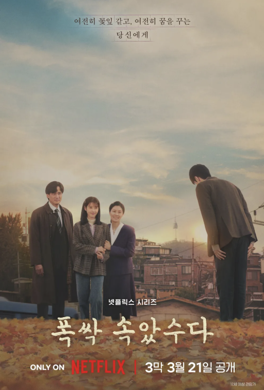

폭삭 속았수다
1950년대 제주에서 태어난 '요망진 반항아' 애순과 '팔불출 무쇠' 관식의 파란만장한 일생을 사계절로 담아낸 넷플릭스 시리즈입니다.
척박한 환경 속에서도 반짝였던 그들의 젊은 날과 깊어가는 세월을 통해, 우리네 부모님 세대의 삶을 따뜻하고도 가슴 뭉클하게 그려냅니다. "수고 많았다"는 의미의 제주도 방언 제목처럼, 평범한 사람들의 위대한 생애를 응원하며 깊은 울림과 눈물을 선사하는 작품입니다.
한 줄 평: 마음이 따뜻해지는 편하게 보기 좋은 드라마입니다.